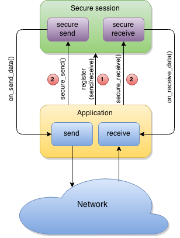

Secure session
Secure session is a lightweight mechanism to secure any network communications (both private and public networks including Internet). It is protocol agnostic and operates on the 5th layer of the network OSI model. Some features: secure end-to-end communication perfect forward secrecy strong mutual peer authentication replay protection low negotiation round-trip uses strong cryptography (including ECC) lightweight, easy to use easy to integrate into existing applications
Communications over secure session contains 2 stages: negotiation (key agreement) stage and actual data exchange.
Negotiation stage
During negotiation stage peers exchange their cryptographic material and authenticate each other. After successful mutual authentication each peer derives session shared secret and other session auxiliary info (session id, initial vectors etc).
NOTE: session id is random and derived from negotiated cryptographic material by each peer independently. There is no way specific value can be enforced by one of the peers.

Data exchange stage
During data exchange stage peers securely exchange data which is provided by higher layer protocols. Session parameters (state) can be saved and restored in any time, so the lifetime of the session expand the underlying environment's powercycle.
WARNING: session state contains sensitive information and should be stored and handled in a secure manner. For example, Secure cell may be used.
Here is how data is protected within the session:

Integration scenarios
Secure session only provides security services and does not do actual network communication. In fact, it is decoupled and independent from any networking implementation. So it's callers responsibility to provide actual network transport for it to use. For easy integration and use there are two types of API available: callback API and buffer-aware API.
Callback API
The easiest way to quickly leverage secure session in your solution is to implement a set of simple callback methods and register them within secure session framework. These callbacks are a little more than just simple send/receive methods, but this is the interface which will bind generic secure session communication with your actual networking implementation.

Buffer-aware API This type of API is useful when integrating secure session in an application with sophisticated established network processing path. So it is more convenient to just add some calls to secure session somewhere in this path. These calls will operate on client-provided buffers rather than using callbacks.

Complex scenarios
With some care in mind it is possible to mix these APIs together and use them simultaneously when neither of the above simple cases is applicable to a specific solution. For example, use buffer-aware API for receiving data, but callback API for sending data use callback API in negotiation stage, buffer-aware API in data exchange stage switch from callback API to buffer-aware API and back in run-time based on some conditions etc
WARNING: invoking any secure session API on same secure session context should be synchronized with respect to that context.